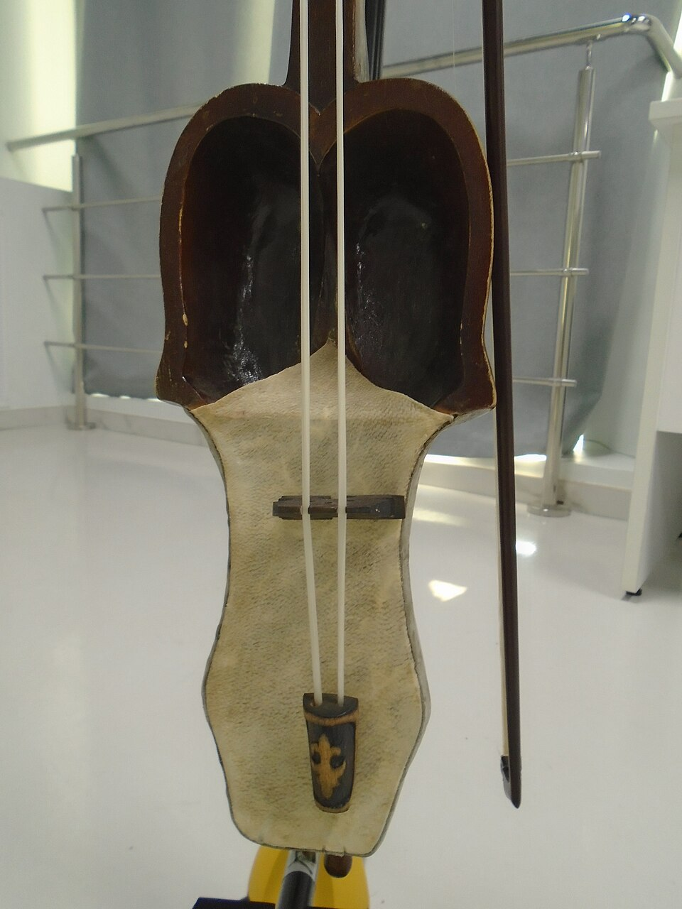
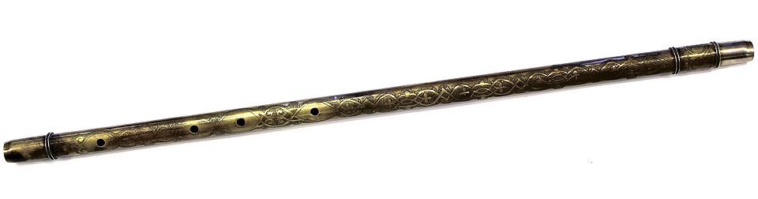
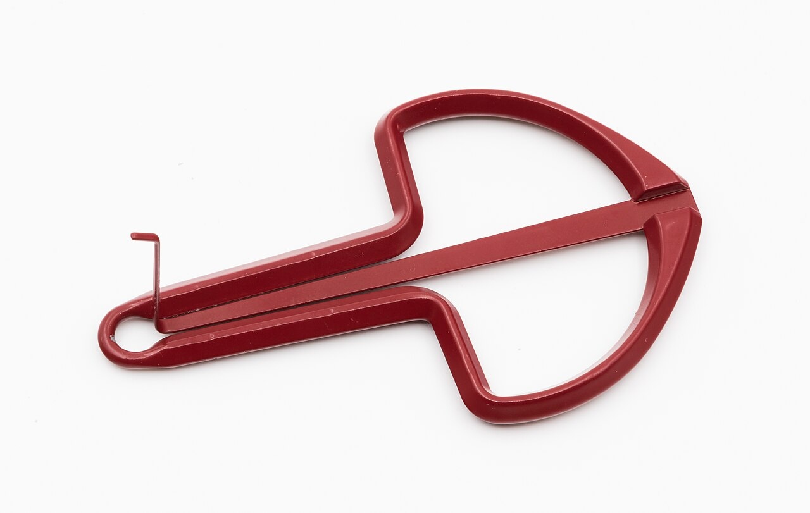

Музыка · 47-бөлім · Қазақтың халық аспаптары Music · Section 47 · Kazakh Folk Instruments Музыка · Раздел 47 · Казахские народные инструменты
🪕 Қазақтың халық аспаптары
🪕 Kazakh Folk Instruments
🪕 Казахские народные инструменты
Домбыра, қобыз, сыбызғы, шаңқобыз — қазақ халқының ғасырлар бойы сақталған дауысы. Әрқайсысының өзіндік үні мен тарихы бар. The dombra, kobyz, sybyzgy and shankobyz — the voice of the Kazakh people kept alive for centuries. Each has its own sound and history. Домбра, кобыз, сыбызгы, шанкобыз — голос казахского народа, сохранённый веками. У каждого инструмента свой звук и своя история.
🪕 Төрт халық аспабы 🪕 Four Folk Instruments 🪕 Четыре народных инструмента

Ең танымал қазақ аспабы. Екі ішекті шертпелі аспап: алмұрт тәрізді ағаш денесі мен пернелері (перне) бар ұзын мойны. Онда күй тартып, әнге сүйемел жасайды. The most famous Kazakh instrument. A two-string plucked instrument with a pear-shaped wooden body and a long neck with frets (perne). It plays küis and accompanies songs. Самый известный казахский инструмент. Двухструнный щипковый: грушевидный деревянный корпус и длинный гриф с ладами (перне). На ней играют кюи и аккомпанируют песням.

Көне ысқышты аспап, тұтас ағаштан ойылады; екі ішегі жылқы қылынан жасалған. Үні терең, созылыңқы, құпияға толы. Бұл — баксы (шаман) мен аңызға айналған Қорқыттың аспабы. An ancient bowed instrument carved from a single piece of wood; its two strings are made of horsehair. The sound is deep, drawn-out and mystical. It is the instrument of the baksy (shamans) and of the legendary Korkyt. Древний смычковый инструмент из цельного куска дерева; две струны из конского волоса. Звук глубокий, протяжный, мистический. Это инструмент баксы (шаманов) и легендарного Коркыта.

Қамыстан немесе ағаштан жасалған бойлық флейта. Бұл — шопанның аспабы, үні жұмсақ әрі «табиғи». An end-blown flute made of reed or wood. A shepherd's instrument with a gentle, "natural" sound. Продольная флейта из тростника или дерева. Пастуший инструмент с нежным «природным» звуком.

Металл варган. Оны тіске/ерінге тіреп ойнайды, дыбысын тыныс пен тілдің қозғалысымен өзгертеді. A metal jew's harp. It is played pressed against the teeth/lips, changing the sound with the breath and the tongue. Металлический варган. На нём играют, прижав к зубам/губам, меняя звук дыханием и языком.
🎧 Аспаптардың үнін есту 🎧 Hear the Instruments 🎧 Услышать инструменты
🎧 батырманы басып, екі үнді салыстырыңыз tap a button and compare the two sounds нажмите кнопку и сравните два звука
💡 Домбыра — қысқа, жылдам шертпе дыбыстар (ре–ля қайталанады); қобыз — ұзақ, созылыңқы, сырғымалы үн. Сондықтан домбыра «сөйлейтіндей», ал қобыз «жылайтындай» естіледі. 💡 The dombra gives short, quick plucked notes (D–A repeating); the kobyz gives a long, drawn-out, sliding tone. That is why the dombra seems to "speak", while the kobyz seems to "weep". 💡 Домбра даёт короткие, быстрые щипковые звуки (ре–ля повторяются); кобыз — длинный, протяжный, скользящий тон. Поэтому домбра будто «говорит», а кобыз будто «плачет».
🌬️ Үн мен ойнау тәсілі 🌬️ Sound and How They Are Played 🌬️ Звук и способ игры
| АспапInstrumentИнструмент | ТүріTypeТип | Ойнау тәсіліHow it is playedКак играют | ҮніSoundЗвук |
|---|---|---|---|
| ДомбыраDombraДомбра | екі ішекті шертпеліtwo-string pluckedдвухструнный щипковый | ішекті саусақпен шертедіstrings plucked with fingersструны щиплют пальцами | ашық, ырғақты, «сөйлейтін»bright, rhythmic, "speaking"звонкий, ритмичный, «говорящий» |
| ҚобызKobyzКобыз | ысқышты (қыл ішек)bowed (horsehair strings)смычковый (волосяные струны) | ысқышпен тартадыdrawn with a bowводят смычком | терең, созылыңқы, мистикалықdeep, drawn-out, mysticalглубокий, протяжный, мистический |
| СыбызғыSybyzgyСыбызгы | үрмелі (бойлық флейта)wind (end-blown flute)духовой (продольная флейта) | үрлеп ойнайдыplayed by blowingиграют, вдувая воздух | жұмсақ, «табиғи»gentle, "natural"нежный, «природный» |
| ШаңқобызShankobyzШанкобыз | варган (металл)jew's harp (metal)варган (металлический) | тіс/ерінге тіреп, тынысыменat the teeth/lips, with the breathу зубов/губ, дыханием | дірілдеген, обертондыbuzzing, rich in overtonesвибрирующий, с обертонами |
📌 Домбырада күй тартады (сөзсіз аспаптық шығарма) және әнге сүйемел жасайды. Қобыз ежелден баксы (шаман) мен аңыздағы Қорқыттың аспабы саналады. Сыбызғы — даланың, шопанның үні, ал шаңқобыз — кішкентай, бірақ ерекше дірілді аспап. 📌 On the dombra one plays the küi (a wordless instrumental piece) and accompanies songs. The kobyz has long been the instrument of the baksy (shaman) and of the legendary Korkyt. The sybyzgy is the voice of the steppe and the shepherd, while the shankobyz is small yet uniquely buzzing. 📌 На домбре играют кюй (бессловесную инструментальную пьесу) и аккомпанируют песням. Кобыз издревле — инструмент баксы (шамана) и легендарного Коркыта. Сыбызгы — голос степи и пастуха, а шанкобыз — маленький, но особенно вибрирующий инструмент.